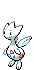

-
Bulbasaur #001

- Grama
- Veneno
Há uma semente de planta em suas costas desde o dia que este Pókemon nasce.A semente cresce lentamente.
-
Ivysaur #002

- Grama
- Veneno
Quando o búlbo em suas costas cresce, parece perder a capacidade de ficar de pé em suas patas traseiras.
-
Venusar #003

- Grama
- Veneno
Sua planta floresce quando está absorvendo energia solar.Ele permance em movimento para bsucar a luz solar.
-
Charmander #004

- Fogo
Tem preferêcias por coisas quentes.Quando chove diz-se que o vapor jorra da ponta de sua cauda.
-
Charmeleon #005

- Fogo
Tem uma natureza bárbara. Na batalha, ele chicoteia sua cauda ardente e corta com garras afiadas.
-
Charizard #006

- Fogo
Ele cospe fogo que é quente o suficiente para derreter pedregulhos. Pode causar incêndios florestais soprando chamas.
-
Squirtle #007

- Água
Quando ele retrai seu longo pescoço em sua concha, ele esguicha água com força vigorosa.
-
Wartortle #008

- Água
É reconhecido como um símbolo de longevidade. Se sua concha tem algas, esse Wartortle é muito antigo.
-
Blastoise #009

- Água
Ele esmaga seu inimigo sob seu corpo pesado para causar desmaios. Em uma pitada, ele se retirará dentro de sua concha.
-
Togepi #175

- Fada
A concha parece estar cheia de alegria. Diz-se que compartilhará boa sorte quando for tratado com gentileza.
-
Togetic #176
- Fada
- Voador
Eles dizem que aparecerá diante de pessoas bondosas e atenciosas e as encherá de felicidade.
-
Togekiss #468

- Fada
- Voador
Esses Pokémon nunca são vistos perto de conflitos ou turbulências. Nos últimos tempos, eles quase não foram vistos.
-
Munchlax #446

- Normal
Encher-se com grandes quantidades de comida é sua única preocupação. Se a comida está estragada ou fresca, saborosa ou sem gosto - não importa.
-
Snorlax #143

- Normal
Não fica satisfeito a menos que coma mais de 880 libras de comida todos os dias. Quando termina de comer, vai imediatamente dormir.
-
Celebi #251

- Psíquico
- Grama
Este Pokémon veio do futuroatravessando o tempo. Pensa-se que, enquanto Celebi aparecer, um futuro brilhante nos espera.